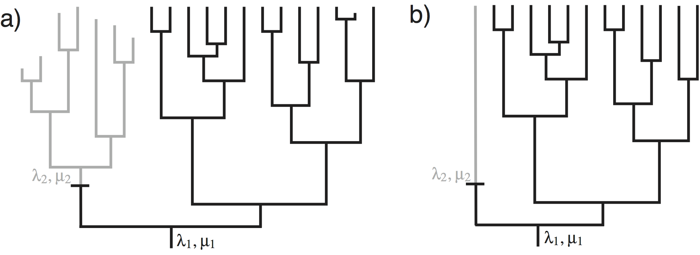
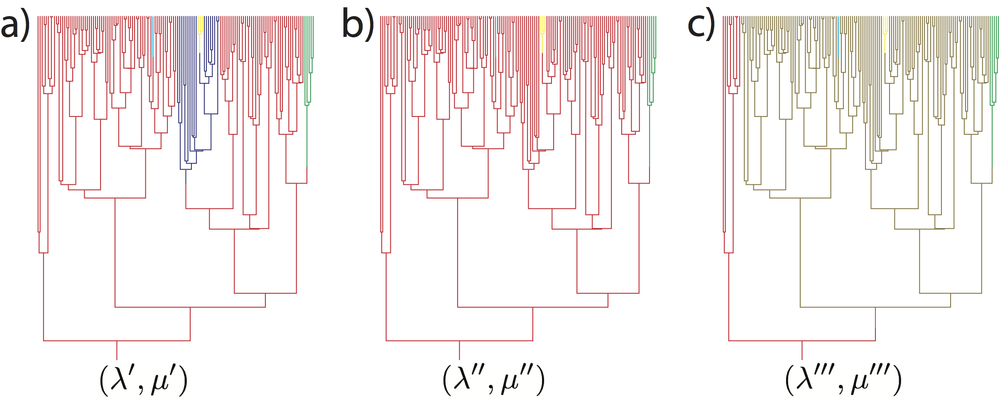
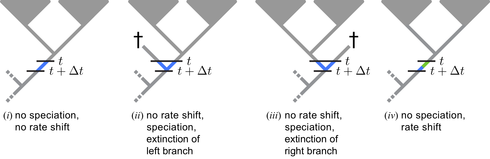
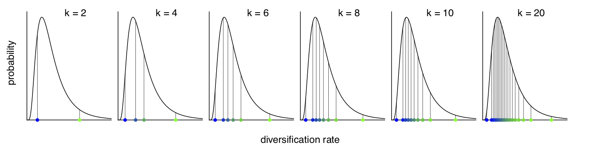
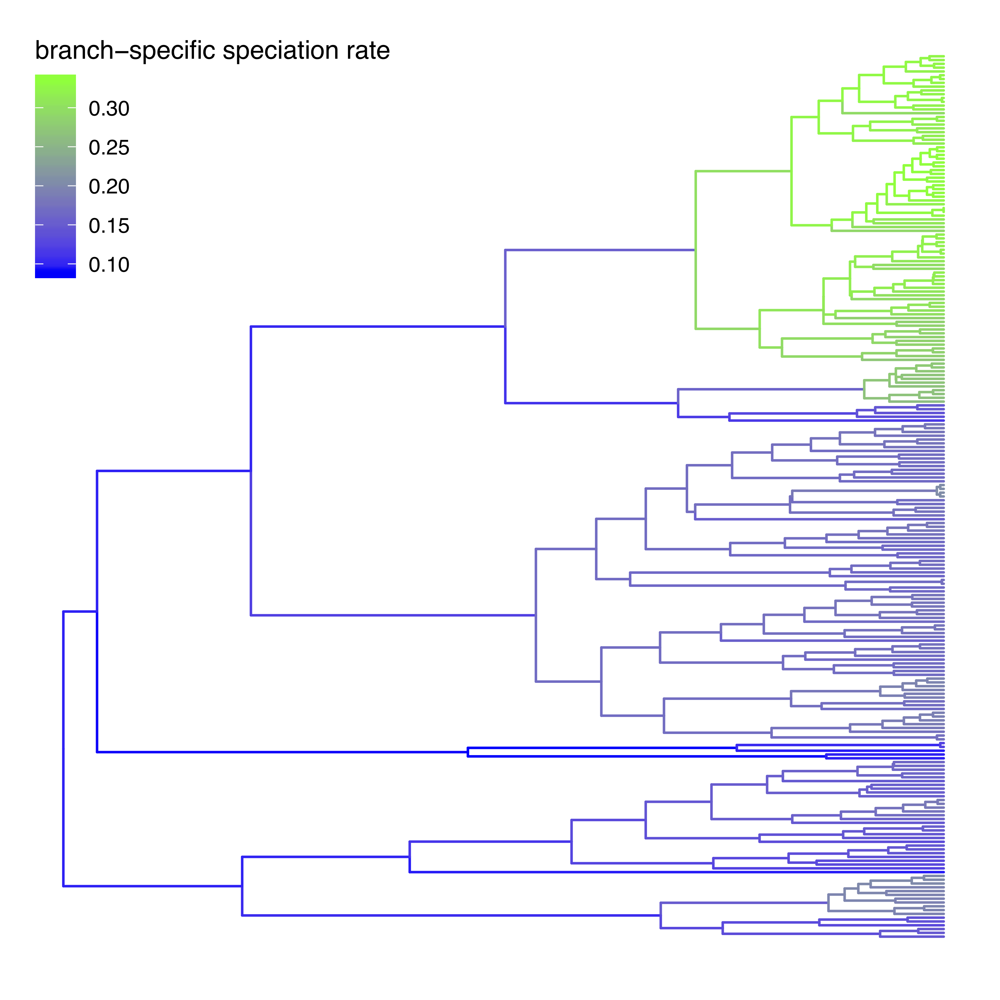

This tutorial describes how to specify a branch-specific branching-process models in RevBayes; a birth-death process where diversification rates vary among branches, similar to Rabosky (2014). The probabilistic graphical model is given for each component of this tutorial. The goal is to obtain estimate of branch-specific diversification rates using Markov chain Monte Carlo (MCMC).

shows an example in which speciation and extinction rates change among lineages. The speciation and extinction rates at the root of the tree of are $(\lambda_1, \mu_1)$. There was one event of change to the speciation and extinction rates on the tree from $(\lambda_1, \mu_1)$ to $(\lambda_2, \mu_2)$. From a casual inspection of the tree, it appears that the single change in speciation and/or extinction rate in the tree of affected the diversity. Note that the clade above the event of speciation/extinction rate change has fewer living species, and more extinct species, than the clade that maintained the ancestral speciation and extinction rates. This is exactly the type of situation we attempt to uncover.
Here we will describe the birth-death-shift process. The parameters in this model are:
The process is described as follows. In a small interval of time, $\Delta t$, a lineage speciates with probability $\lambda \Delta t$, goes extinct with probability $\mu \Delta t$, or changes its rate with probability $\eta \Delta t$. When a speciation event occurs, both daughter lineages inherit the speciation and extinction rates of the parent lineage. When an event of rate change occurs, new speciation and extinction rates are drawn from the probability distributions, $f_{\lambda}(\cdot)$ and $f_{\mu}(\cdot)$. The affected lineage then continues, but with the modified speciation and extinction rates. When an extinction event occurs, the lineage is terminated at the event time.

In this analysis we are interested in estimating the branch-specific diversification rates.
We show how to implement and use the model developed by Höhna et al. (2019)
We are going to use the dnCBDP distribution which uses a finite number of rate-categories
instead of drawing rates from a continuous distribution directly.
Here we adopt an approach using (few) discrete rate categories. This allows us to numerically integrate over all possible rate categories using a system of differential equations originally described by Maddison et al. (2007) (see also FitzJohn et al. (2009) and FitzJohn (2010)). The numerical procedure breaks time into very small time intervals and sums over all possible events occurring in that interval (see ).

You don’t need to worry about any of the technical details. It is important for you to realize that this model assumes that new rates at a rate-shift event are drawn from a given (discrete) set of rates (see ).
Begin by reading in the observed tree.
observed_phylogeny <- readTrees("data/primates_tree.nex")[1]
From this tree, we can get some helpful variables:
taxa <- observed_phylogeny.taxa()
root <- observed_phylogeny.rootAge()
tree_length <- observed_phylogeny.treeLength()
Additionally, we initialize a variable for our vector of moves and monitors.
moves = VectorMoves()
monitors = VectorMonitors()
Finally, we create a helper variable that specifies the number of discrete rate categories, another helper variable for the total number of species and our constant for specifying the standard deviation of the lognormal distribution.
NUM_RATE_CATEGORIES = 6
NUM_TOTAL_SPECIES = 367
H = 0.587405
Using these variables we can easily change our script, for example, to use more or fewer categories and test the impact.

Instead of using a continuous probability distribution we will use a
discrete approximation of the distribution, as done for modeling rate
variation across sites (Yang 1994) and for modeling relaxed molecular
clocks (Drummond et al. 2006). That means, we assume that the speciation rates
are drawn from one of the $N$ quantiles of the lognormal distribution.
For this we will use the function fnDiscretizeDistribution which takes
in a distribution as its first argument and the number of quantiles as
the second argument. The return value is a vector of quantiles. We use
it as a deterministic variable and every time the parameters of the base
distribution (i.e., the lognormal
distribution in our case) change the quantiles will update automatically
as well. Thus we only need to specify parameters for our base
distribution, the lognormal distribution.
We choose a log-uniform distribution as the prior distribution for the mean parameter of the lognormal distribution.
speciation_mean ~ dnLoguniform( 1E-6, 1E2)
moves.append( mvScale(speciation_mean, lambda=1, tune=true, weight=2.0) )
Next, we choose an exponential prior distribution with mean of $H$ for the variation in speciation rates.
speciation_sd ~ dnExponential( 1.0 / H )
moves.append( mvScale(speciation_sd, lambda=1, tune=true, weight=2.0) )
Now, we can compute the speciation rate categories.
We will use a lognormal distribution discretized into NUM_RATE_CATEGORIES quantiles and the parameters that we should created.
speciation := fnDiscretizeDistribution( dnLognormal(ln(speciation_mean), speciation_sd), NUM_RATE_CATEGORIES )
Similarly, we define the prior on the extinction rate in the same way as we did for the speciation rate.
extinction_mean ~ dnLoguniform( 1E-6, 1E2)
extinction_mean.setValue( speciation_mean / 2.0 )
moves.append( mvScale(extinction_mean, lambda=1, tune=true, weight=2.0) )
However, we assume that extinction rate is the same for all categories.
Therefore, we simply replicate using the rep function the extinction rate NUM_RATE_CATEGORIES times.
extinction := rep( extinction_mean, NUM_RATE_CATEGORIES )
Next, we need a rate parameter for the rate-shifts events. We do not
have much prior information about this rate but we can provide some
realistic ranges. For example, we can specify a uniform distribution that the
goes from 0 to 100 expected events.
Remember that this is only possible if the tree is known and not
estimated simultaneously because only if the tree is known, then we also know the
tree length. As usual for rate parameter, we apply a scaling move to the
event_rate variable.
event_rate ~ dnUniform(0.0, 100.0/tree_length)
moves.append( mvScale(event_rate, lambda=1, tune=true, weight=2.0) )
Additionally, we need a parameter for probability that the process starts at the root in any of the diversification-rate categories. We use a uniform/equal prior distribution on the diversification-rate categories.
rate_cat_probs <- simplex( rep(1, NUM_RATE_CATEGORIES) )
Shifts in the Extinction Rate
We might want to allow the extinction rate to change as well. As with the speciation rate, we discretize the lognormal distribution into a finite number of rate categories.
extinction_categories := fnDiscretizeDistribution( dnLognormal(ln(extinction_mean), H), NUM_RATE_CATEGORIES )Now, we must create a vector that contains each combination of speciation- and extinction-rates. This allows the rate of speciation to change without changing the rate of extinction and vice versa. The resulting vector should be $N^2$ elements long. We call these the `paired’ rate categories.
k = 1 for(i in 1:NUM_RATE_CATEGORIES) { for(j in 1:NUM_RATE_CATEGORIES) { speciation[k] := speciation_categories[i] extinction[k++] := extinction_categories[j] } }Now we also need to specify a root prior for $N^2$ elements.
rate_cat_probs <- simplex( rep(1, NUM_RATE_CATEGORIES * NUM_RATE_CATEGORIES) )Note however, that this type of analysis will take significantly longer to run!
We know that we have sampled 233 out of 367 living primate species. To account for this we can set the sampling parameter as a constant node with a value of 233 / 367.
rho <- observed_phylogeny.ntips() / NUM_TOTAL_SPECIES
The birth-death process requires a parameter for the root age. In this
exercise we use a fix tree and thus we know the age of the tree. Hence,
we can get the value for the root from the (Magnuson-Ford and Otto 2012) tree. This
is done using our global variable root defined above and nothing else
has to be done here.
Now we have all of the parameters we need to specify the full branch-specific birth-death model. We initialize the stochastic node representing the time tree.
timetree ~ dnCDBDP( rootAge = root,
speciationRates = speciation,
extinctionRates = extinction,
Q = fnJC(NUM_RATE_CATEGORIES),
delta = event_rate,
pi = rate_cat_probs,
rho = rho,
condition = "time" )
And then we attach data to it.
timetree.clamp(observed_phylogeny)
Finally, we create a workspace object of our whole model using the
model() function.
mymodel = model(speciation)
The model() function traversed all of the connections and found all of
the nodes we specified.
For our MCMC analysis, we need to set up a vector of monitors to
record the states of our Markov chain. First, we will initialize the
model monitor using the mnModel function. This creates a new monitor
variable that will output the states for all model parameters when
passed into a MCMC function.
monitors.append( mnModel(filename="output/primates_BDS.log",printgen=1, separator = TAB) )
For summary and plotting purposes, we need to obtain the branch-specific diversification rate estimate along the tree.
We will use a stochastic rate mapping algorithm Freyman and Höhna (2019).
Thus, we create an mnStochasticBranchRate. The stochastic branch-rate monitor
draws stochastic character maps and writes the simulated branch rates into a file.
We will need this file later to estimate and visualize the posterior
distribution of the rates at the branches.
monitors.append( mnStochasticBranchRate(cdbdp=timetree, printgen=1, filename="output/primates_BDS_rates.log") )
Finally, create a screen monitor that will report the states of
specified variables to the screen with mnScreen:
monitors.append( mnScreen(printgen=10, event_rate, speciation_mean, extinction_mean) )
With a fully specified model, a set of monitors, and a set of moves, we
can now set up the MCMC algorithm that will sample parameter values in
proportion to their posterior probability. The mcmc() function will
create our MCMC object:
mymcmc = mcmc(mymodel, monitors, moves, nruns=2, combine="mixed")
Now, run the MCMC:
mymcmc.run(generations=2500,tuning=200)
⇨ The Rev file for performing this analysis: mcmc_BDS.Rev
When the analysis is complete, you will have the monitored files in your
output directory. You can then visualize the branch-specific rates by
plotting them using our R package RevGadgets.
Just start R in the main directory for this analysis and then type the following commands:
library(RevGadgets)
my_tree_file = "data/primates_tree.nex"
my_branch_rates_file = "output/primates_BDS_rates.log"
tree_plot = plot_branch_rates_tree( tree_file=my_tree_file,
branch_rates_file=my_branch_rates_file)
ggsave("BDS.pdf", width=15, height=15, units="cm")

R using RevGadgets.NUM_RATE_CATEGORIES), e.g., 4 or 10. How do the rates change?